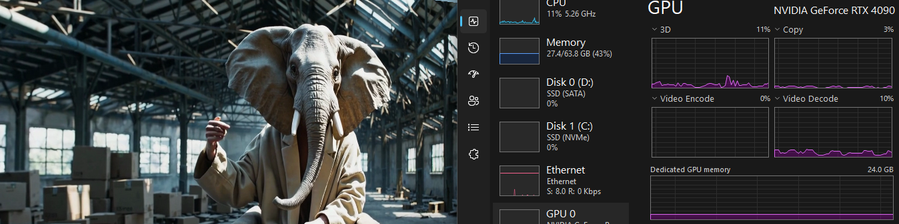
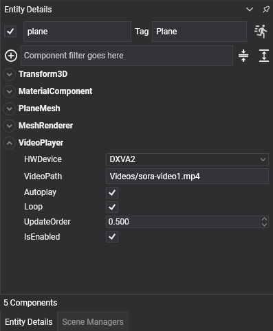
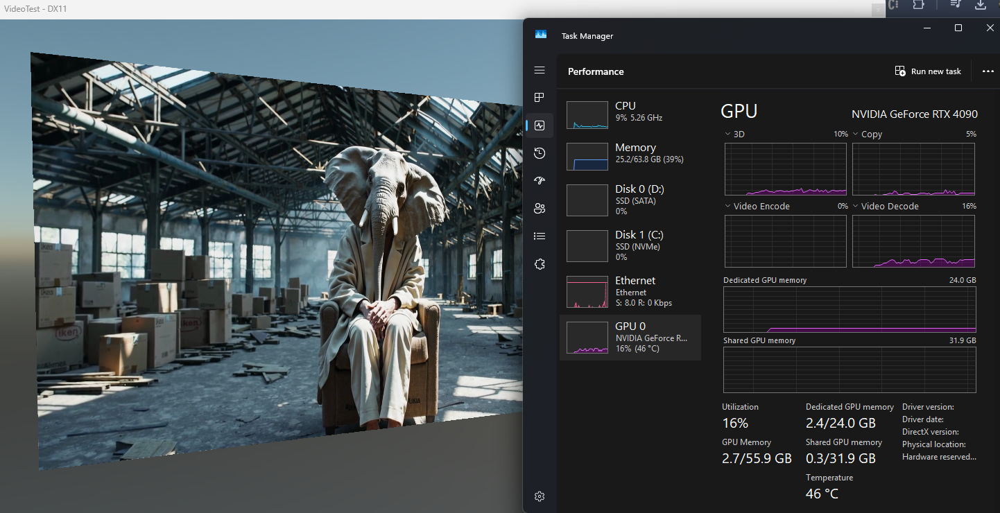

Video Runtime

The Evergine.Runtimes.Video package plays video files on any surface of your scene: a screen in a virtual showroom, a billboard, or the background of a menu. Its VideoPlayer component decodes the video with FFmpeg frame by frame, uploads each frame to a GPU texture, and shows that texture through the material of its entity.
| Package | Evergine.Runtimes.Video |
| Namespace | Evergine.Runtimes.Video |
| Component | VideoPlayer (a Behavior) |
| Formats | Containers and codecs supported by FFmpeg 7.1, tested with MP4 (H.264), MOV, WMV and FLV |
| Output | A Texture in R8G8B8A8_UNorm, updated at the frame rate of the video |
| Reads from | A file path only |
| Platforms | Windows x64 |
Platform support
FFmpegBinariesHelper.RegisterFFmpegBinaries(), which the component calls when it is attached, decides where the FFmpeg libraries come from:
| Operating system | FFmpeg libraries |
|---|---|
| Windows | The package ships FFmpeg 7.1 for x64 and copies it to runtimes\win-x64\native in the output folder. Set FFmpegBinariesHelper.WindowsLibraryPath before the component is attached to load them from another folder. |
| Linux | The libraries installed on the system, from /lib/x86_64-linux-gnu/. They must be the FFmpeg 7.x versions the bindings expect. |
| Any other | NotSupportedException. |
Evergine project templates target Windows, Web, Android and iOS, so in practice the video runtime is a Windows x64 feature.
Note
FFmpeg is only initialized when the application runs. In the Evergine Studio viewport the component does nothing, and the entity shows its material without the video.
Add a video in Evergine Studio
- Add the
Evergine.Runtimes.VideoNuGet package to the main project of your application. - Copy the video to the
Contentfolder and mark it with Set to export as raw in the Assets Details panel, so the file reaches the output unchanged. - Create an entity with a mesh (for example a plane), a
MeshRenderer, and aMaterialComponentwhose material uses the standard effect. - Add a VideoPlayer component and set VideoPath to the path of the video inside
Content.

When playback starts, the component opens the video, creates the video texture and puts it in the base color texture of the entity's material. For any other material, or to show the video somewhere else, read the VideoTexture property and assign it yourself.
Important
The component writes to the material in the MaterialComponent, not to a copy. If that material is shared, every entity that uses it shows the video. Give each screen its own material.
Properties
| Property | Default | Description |
|---|---|---|
| VideoPath | null |
Path of the video file, combined with the Content folder of the application; an absolute path is used as it is. Setting it at run time closes the current video and opens the new one. |
| Autoplay | false |
Starts playback when the component is attached, without calling Play(). |
| Loop | false |
Rewinds to the first frame when the video ends. Without it, the last frame stays on screen. |
| HWDevice | DXVA2 |
Decoder device. NONE decodes on the CPU; the other values select an FFmpeg hardware decoder. See Hardware decoding. |
These are read only, and valid once playback has started:
| Property | Description |
|---|---|
| VideoTexture | The texture that receives the frames. |
| VideoWidth | Width of the video in pixels. |
| VideoHeight | Height of the video in pixels. |
| VideoState | Stopped, Playing or Paused. |
Playback control
| Method | Effect | Event |
|---|---|---|
| Play() | Starts or resumes playback. | Playing |
| Pause() | Holds the current frame. | Paused |
| Stop() | Stops playback and rewinds to the first frame. Only acts while the video is playing. | Stopped |
The events are raised by the methods only. Playback started by Autoplay does not raise Playing and leaves VideoState at Stopped until you call one of the methods. Reaching the end of a video that does not loop leaves VideoState at Playing without raising Stopped.
Tip
When code needs to follow the playback state, leave Autoplay off and call Play() yourself, so that VideoState and the events stay in step with what is on screen.
Hardware decoding
Decoding high-resolution video on the CPU is expensive. A hardware decoder moves that work to the GPU, which lets several videos play at once without slowing the application down.

A video decoded through DXVA2 on Windows. Video generated with OpenAI Sora.
| HWDevice | Decoder |
|---|---|
NONE |
CPU decoding. Works for every codec FFmpeg supports. |
DXVA2 |
DirectX Video Acceleration 2 on Windows. The default. |
D3D11VA |
Direct3D 11 video decoding on Windows. |
CUDA, QSV, VDPAU, VAAPI, DRM, OPENCL, VULKAN, VIDEOTOOLBOX, MEDIACODEC |
FFmpeg device types for other GPUs and operating systems. Whether they work depends on the FFmpeg build and the driver. |
Only DXVA2 and D3D11VA are mapped to the NV12 frames that Windows hardware decoders return, so on Windows use one of those two, or NONE.
If the hardware decoder cannot be created, the component throws an exception the first time it updates; it does not fall back to the CPU. Set HWDevice to NONE on machines without a compatible GPU.
Complete example
The scene below creates a 16:9 screen with its own unlit material and plays a video from the Content folder. A behavior on the same entity starts playback, toggles it with the space bar and stops it with S.
using System;
using Evergine.Common.Graphics;
using Evergine.Common.Input;
using Evergine.Common.Input.Keyboard;
using Evergine.Components.Graphics3D;
using Evergine.Framework;
using Evergine.Framework.Graphics;
using Evergine.Framework.Graphics.Effects;
using Evergine.Framework.Graphics.Materials;
using Evergine.Framework.Services;
using Evergine.Mathematics;
using Evergine.Runtimes.Video;
public class VideoScene : Scene
{
protected override void CreateScene()
{
var assetsService = Application.Current.Container.Resolve<AssetsService>();
var effect = assetsService.Load<Effect>(DefaultResourcesIDs.StandardEffectID);
// A material of its own, so no other entity shows the video.
var screenMaterial = new StandardMaterial(effect)
{
// Video frames already contain their final colors.
LightingEnabled = false,
IBLEnabled = false,
LayerDescription = assetsService.Load<RenderLayerDescription>(DefaultResourcesIDs.OpaqueRenderLayerID),
BaseColorSampler = assetsService.Load<SamplerState>(DefaultResourcesIDs.LinearClampSamplerID),
};
Entity screen = new Entity("screen")
.AddComponent(new Transform3D() { Position = new Vector3(0, 1, 0) })
.AddComponent(new MaterialComponent() { Material = screenMaterial.Material })
.AddComponent(new PlaneMesh() { PlaneNormal = PlaneMesh.NormalAxis.ZPositive, Width = 1.6f, Height = 0.9f })
.AddComponent(new MeshRenderer())
.AddComponent(new VideoPlayer()
{
VideoPath = "Videos/intro.mp4",
Loop = true,
})
.AddComponent(new VideoKeyboardControl());
this.Managers.EntityManager.Add(screen);
}
}
public class VideoKeyboardControl : Behavior
{
[BindComponent]
private VideoPlayer videoPlayer = null;
[BindService]
private GraphicsPresenter graphicsPresenter = null;
protected override void OnActivated()
{
base.OnActivated();
// Play() instead of Autoplay keeps VideoState accurate from the start.
this.videoPlayer.Play();
}
protected override void Update(TimeSpan gameTime)
{
KeyboardDispatcher keyboard = this.graphicsPresenter.FocusedDisplay?.KeyboardDispatcher;
if (keyboard == null)
{
return;
}
if (keyboard.ReadKeyState(Keys.Space) == ButtonState.Pressing)
{
if (this.videoPlayer.VideoState == VideoPlayer.VideoStateType.Playing)
{
this.videoPlayer.Pause();
}
else
{
this.videoPlayer.Play();
}
}
else if (keyboard.ReadKeyState(Keys.S) == ButtonState.Pressing)
{
// Stop only acts on a playing video, so resume a paused one first.
this.videoPlayer.Play();
this.videoPlayer.Stop();
}
}
}
Play a video downloaded from the Internet
VideoPlayer only opens files, so download the video to a local file first and assign its absolute path to VideoPath:
using System.IO;
using System.Net.Http;
using System.Threading.Tasks;
using Evergine.Framework.Threading;
using Evergine.Runtimes.Video;
public static class VideoDownloader
{
private static readonly HttpClient httpClient = new HttpClient();
public static async Task PlayFromUrlAsync(VideoPlayer player, string url)
{
string localPath = Path.Combine(Path.GetTempPath(), Path.GetFileName(new System.Uri(url).LocalPath));
using (var response = await httpClient.GetAsync(url, HttpCompletionOption.ResponseHeadersRead))
{
response.EnsureSuccessStatusCode();
using var file = File.Create(localPath);
await response.Content.CopyToAsync(file);
}
// The component reads VideoPath from its Update, on the Evergine main thread.
await EvergineForegroundTask.Run(() =>
{
player.VideoPath = localPath;
player.Play();
});
}
}